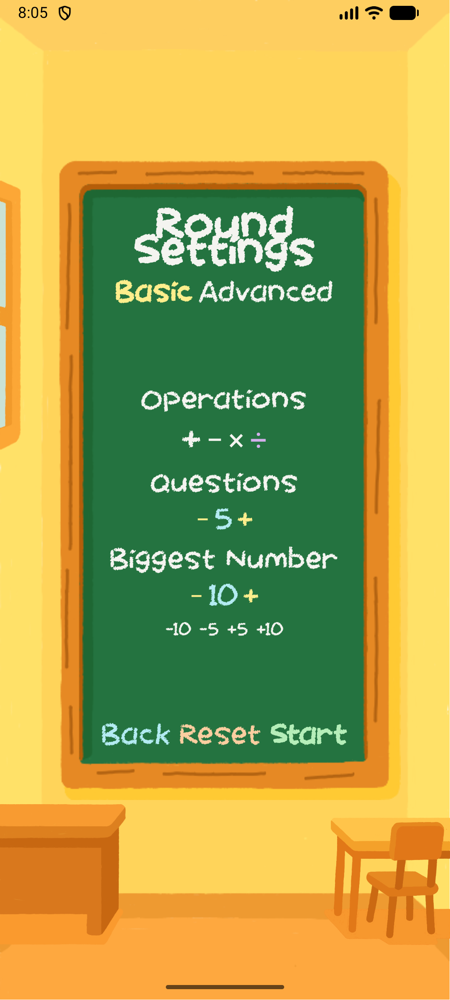

Configurable Practice
Individualized Sessions
Practice settings allow learners to select mathematical operations, adjust difficulty parameters, and customize the kinds of questions they encounter.

Educational Android Application
Customizable arithmetic practice designed to help learners develop confidence, fluency, and a stronger understanding of mathematics.
Project Overview
A configurable learning experience built around the needs of individual learners rather than a fixed curriculum.
Arith-Matic is a native Android application that helps learners practice arithmetic through focused, repeatable exercises. Users can configure practice sessions around different mathematical operations, difficulty settings, and question parameters.
The application uses a classroom-inspired visual design, with chalkboards, familiar educational imagery, and straightforward controls. Its presentation is intended to make practice approachable without distracting from the mathematics itself.
Arith-Matic is developed using Kotlin and Jetpack Compose, with an emphasis on maintainable architecture, reusable interface components, and clear separation between presentation and application logic.




Application Features
Arith-Matic provides tools for configuring exercises, practicing mathematical operations, and reviewing learning activity.
Individualized Sessions
Practice settings allow learners to select mathematical operations, adjust difficulty parameters, and customize the kinds of questions they encounter.
Extensible Question Generation
The question-generation system is organized around distinct mathematical operations, allowing operation rules and difficulty controls to be handled independently.
Performance Feedback
Practice rounds provide a defined activity with opportunities to review outcomes, correctness, and progress over time.
A Configurable Experience
Dedicated settings interfaces support customization beyond an individual practice round, including controls intended for different learners and supervising adults.
Engineering
Built as a native Android application with clear responsibilities between the interface, application state, configuration, and question-generation systems.
Arith-Matic uses Kotlin and Jetpack Compose for its Android implementation. Its architecture is primarily based on Model-View-ViewModel (MVVM), using ViewModels to manage interface state and coordinate interactions with application logic.
The application's practice configuration is represented through dedicated data models rather than being embedded directly into interface code. These models describe the selected operations, difficulty parameters, and modifiers for a practice session.
Question generators interpret the configuration and produce arithmetic problems according to the rules of their respective operations. Keeping question generation separate from the interface makes the system easier to extend, test, and maintain.
Reusable Compose components provide a consistent interface across the application's screens, while navigation, state management, and practice logic remain distinct responsibilities.
Application Development
The primary language used to implement the application's models, state management, question generation, and Android functionality.
Declarative User Interface
Reusable composable interface elements support the classroom presentation, configuration screens, and practice experience.
State and Responsibility Management
ViewModels help coordinate screen state and user interactions while keeping presentation concerns separate from application behavior.
Design Considerations
The technical design is informed by the experience of the people who will actually use the application.
Learning experience. Arith-Matic emphasizes adaptable practice and individual improvement rather than requiring every learner to follow the same progression. The classroom-inspired interface aims to make arithmetic practice approachable without overwhelming the user with unnecessary elements.
Accessibility. Interface design considers readable text, practical touch targets, understandable feedback, and the needs of users with different abilities. Communicating important information through more than color alone is an ongoing design priority.
Privacy. Data minimization is a guiding principle for the project, particularly because children may use the application. Its design prioritizes collecting and retaining only information necessary to support the learning experience.
Wise Raven Studios
Explore other educational applications, games, simulations, and software projects from Wise Raven Studios.